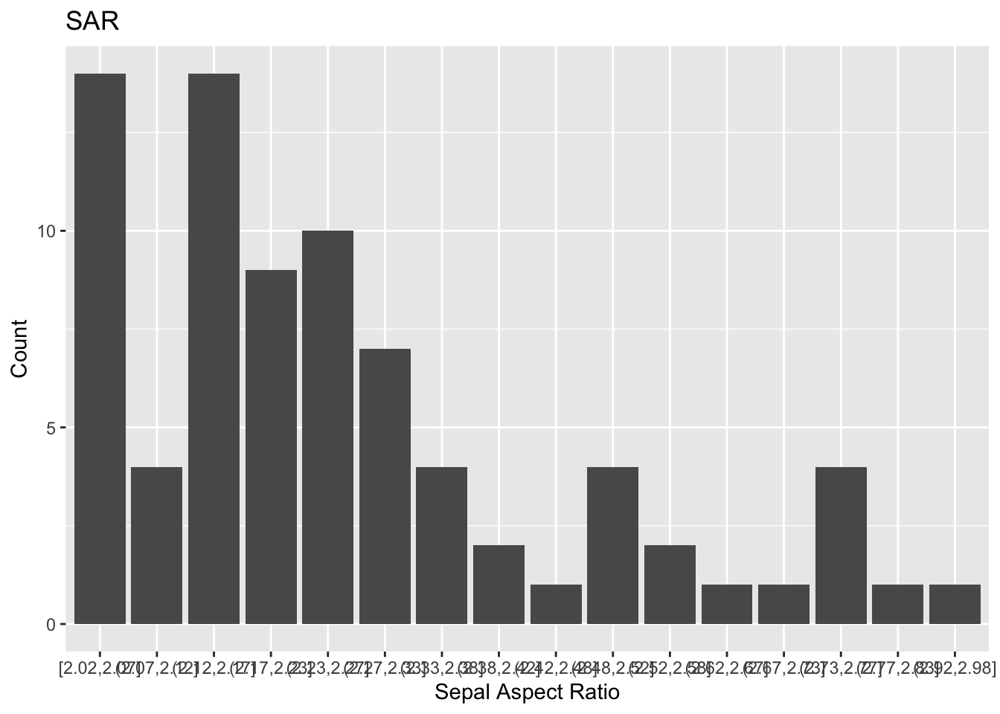
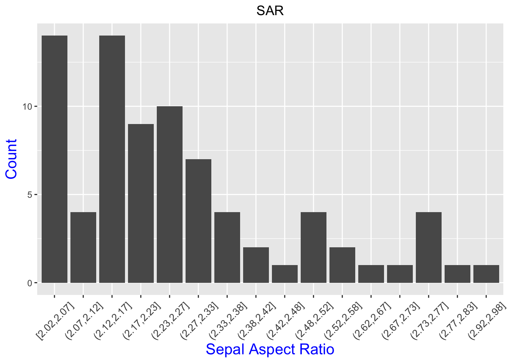
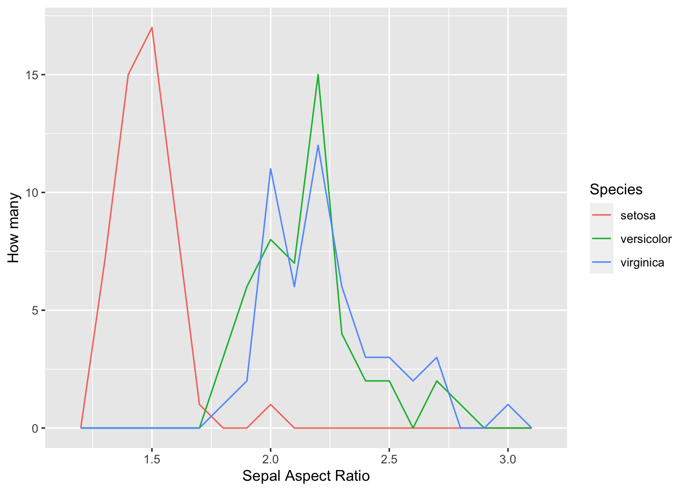
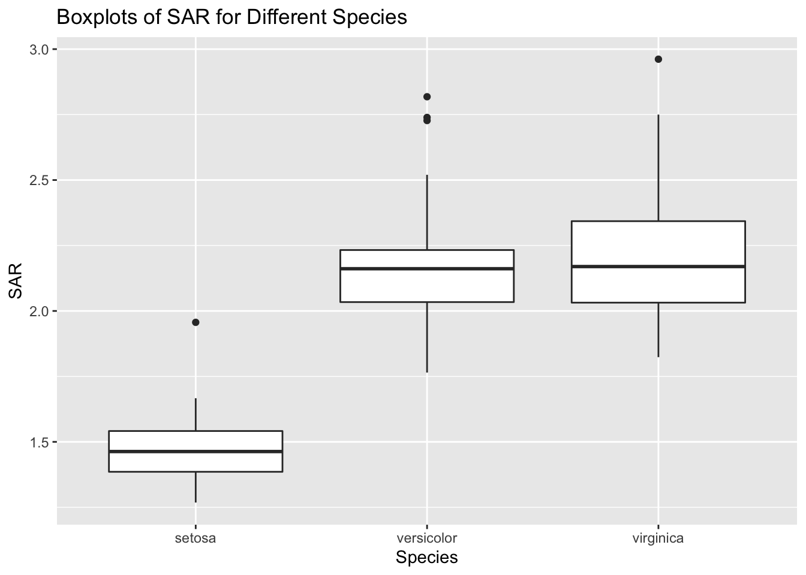
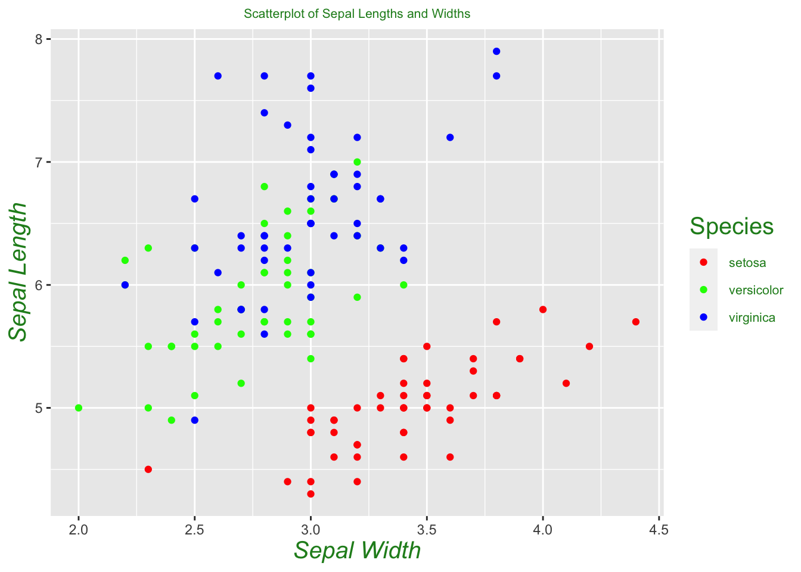
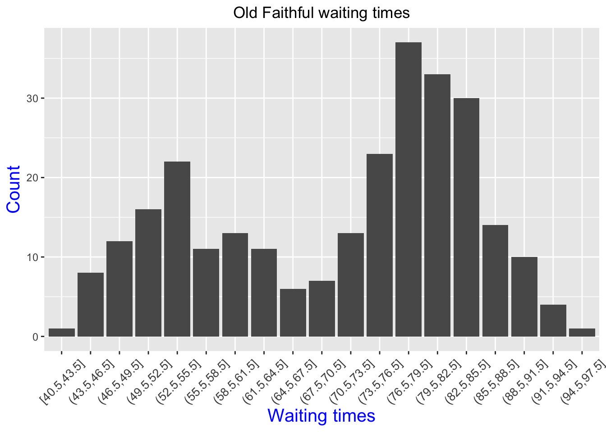
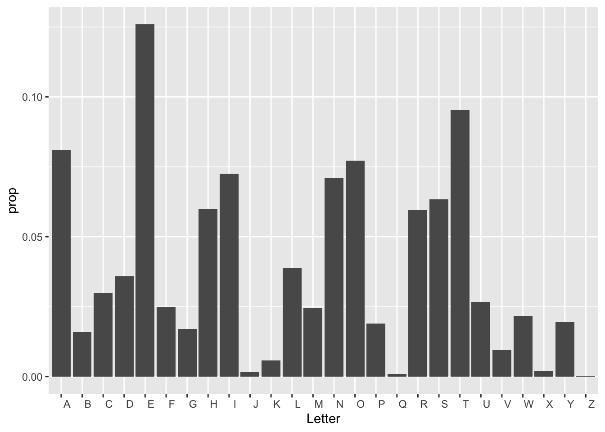

Let’s continue looking at the iris dataset.
The main point for this lab is to take a look at three different visualizations, with each trying to show how sepal aspect ratio changes with regards to each species.
Let’s first look using geom_bar and using the cut_width function to bin with respect to sar.
p= iris %>% mutate( sar = Sepal.Length/Sepal.Width) %>% filter(sar > 2) %>%
ggplot()+ geom_bar(mapping = aes(x = cut_width(sar, .05)))+
labs(title = "SAR", x = 'Sepal Aspect Ratio', y = 'Count')
p
How ugly! It’s basically impossible to read the intervals on the x-axis. Let’s see how we can clean this up.
p+ theme(axis.text.x = element_text(angle = 45, vjust = .5, size = 10))+
theme(plot.title = element_text(hjust = 0.5))+
theme(axis.title = element_text(size = 15, color = "blue"))
Much better!
Now let’s use the geom_freqpoly function. This gives three line graphs.
iris %>% mutate( sar = Sepal.Length/Sepal.Width) %>% ggplot()+
geom_freqpoly(aes(x = sar,color = Species), binwidth = .1)+
xlab('Sepal Aspect Ratio') +ylab('How many')
Finally, to beat a dead horse, let’s take a look at box plots.
iris %>% mutate( sar = Sepal.Length/Sepal.Width) %>% ggplot()+
geom_boxplot(aes(x = Species, y = sar))+
labs(x = 'Species', y = 'SAR', title = 'Boxplots of SAR for Different Species')
Q: What are the advantages and disadvantages to each of the visuals shown?
Now let’s make a scatter plot which compares sepal lengths and widths.
iris %>% ggplot()+
geom_point(aes(x = Sepal.Width, y = Sepal.Length, color = Species))+
labs(x = 'Sepal Width', y = 'Sepal Length',
title = 'Scatterplot of Sepal Lengths and Widths')+
theme(plot.title = element_text(hjust = 0.5, size = 8, color = "forest green"))+
theme(axis.title = element_text(size = 15,
color = "forest green", face = "italic"))+
theme(legend.title = element_text(size = 15, color = "forest green"))+
theme(legend.text = element_text(size = 8, color = "forest green"))+
# scale_color_manual(values=c("#999999", "#E69F00", "#56B4E9"))+
scale_color_manual(values=c("red", "green", "blue"))
Just from seeing a visualization of sepal length versus width, we can already see that setosas seem to separate themselves from the other two species. One can build a crude classification algorithm from this by drawing a line between the two clusters, and guessing that an unlabeled flower is a setosa if it lies below the line, and not a setosa if it lies above the line. In other words, we’re guessing these two classifications are linearly separable. We can see from our plot that versicolor and virginica are not linearly separable, at least under the two variables we are considering. We may need to consider a different set of variables to successfully separate these two species, or appeal to a different method altogether. In a later section, we will see that we can successfully differentiate between the two species using the \(k\) -nearest neighbors algorithm, a popular technique in machine learning.
The world’s datasets aren’t all contained in R. Almost always in data science, you’ll be downloading datasets from webpages or emails sent by doctors/business executives/etc. who don’t know the first thing about data. As the data scientist, getting the data into a usable form in R will be on you. Downloading data from the web, however, is usually not so hard.
Suppose you’ve been tasked with finding Old Faithful waiting times between eruptions. After a long search on the internet, you may stumble upon data from this webpage. Datasets come in a variety of forms, but two very common ones are .csv and .txt files. It would be exhausting at best to open up this page and then copy/paste each entry into R. A much better alternative is one of the following:
After your file is downloaded, you can upload your data into R using the `Import Dataset’ button at the top right of RStudio. Select the “From Text (base)” option, and open your file. You may have to deal with things such as whether to include the header as a row in your data. Fortunately, RStudio gives you a preview of what your data is going to look like.
Once our data is loaded, let’s take a look at a histogram of waiting times.
faithful.dat %>% ggplot(aes(x = cut_width(waiting, 3)))+ geom_bar()+
theme(axis.text.x = element_text(angle = 45, vjust = .5, size = 10))+
theme(plot.title = element_text(hjust = 0.5))+
theme(axis.title = element_text(size = 15, color = "blue"))+
labs(title = "Old Faithful waiting times", x = 'Waiting times', y = 'Count') 
Let’s do one more example. This one, found here is courtesy of Prof. John Burkardt’s web page from Florida State University.
Q: Download the letter frequency dataset. What letter is the most frequent? The second most frequent?
There’s two ways to show this bar plot.
letter_frequency %>% mutate(prop = Frequency/sum(Frequency)) %>%
ggplot(aes(x = Letter, y = prop))+geom_col()
Q: Now it’s your turn! Take a look at either the previous webpage we used, or find one yourself. Download a data set and create a nice looking visual.